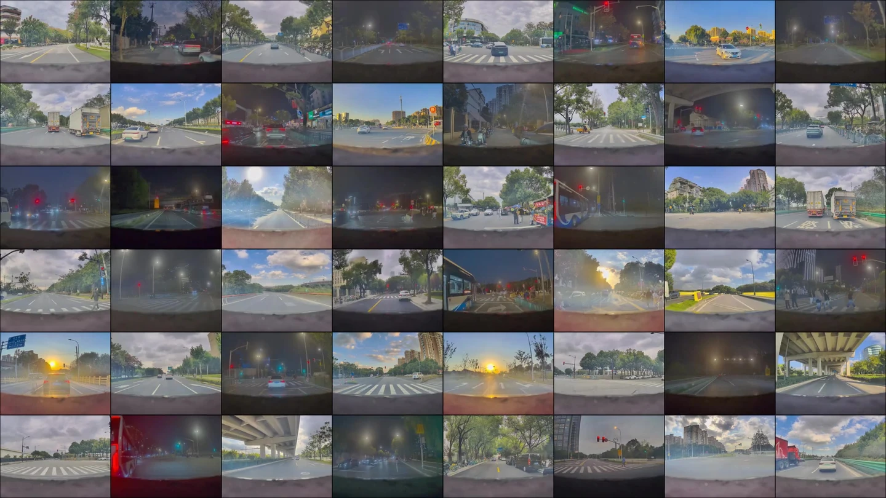
Featured researchWorld-action models Co-first author
EponaX
Recipes for Training and Deploying World-Action Models in the Real World
Project & driving demosSenior Algorithm Researcher
I work on world models for autonomous driving, with a focus on visual tokenization and large-scale training. My earlier research at Tencent AI Lab and Tencent Hunyuan spans language-model alignment, multimodal learning, and game AI.

Featured researchWorld-action models Co-first author
Recipes for Training and Deploying World-Action Models in the Real World
Project & driving demos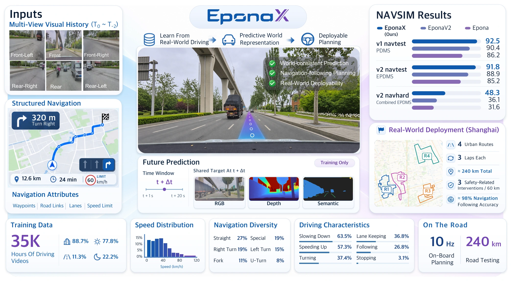
Combines multi-view driving history and structured navigation for on-vehicle trajectory planning. During training, the model learns to predict future appearance, depth, and semantics.
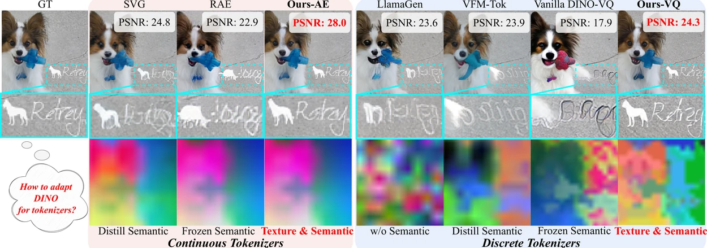
Combines hierarchical DINO features to preserve both texture and semantics in a visual tokenizer.
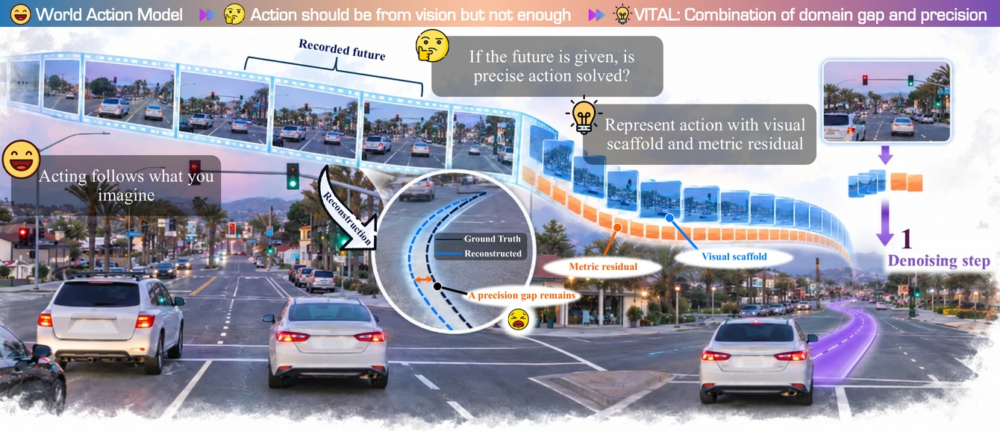
Encodes visual motion and its remaining metric error as paired action tokens for precise trajectory planning.
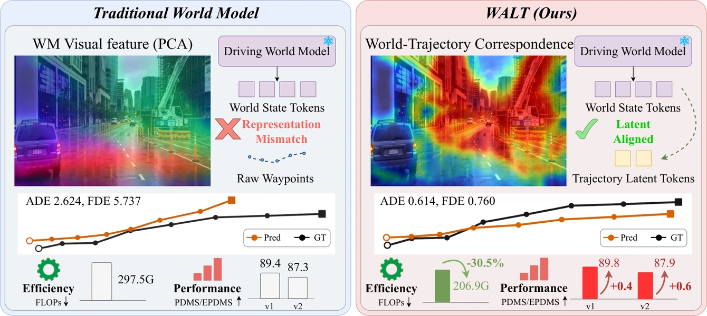
Aligns compact trajectory latents with a frozen driving world model to improve planning and reduce planner compute.
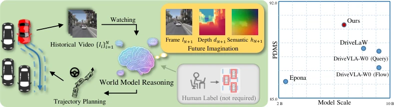
Forecasts future geometry and semantics to improve trajectory planning.
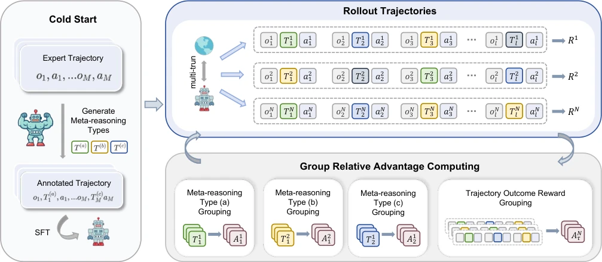
Rewards verifiable intermediate reasoning to improve long-horizon agent behavior.
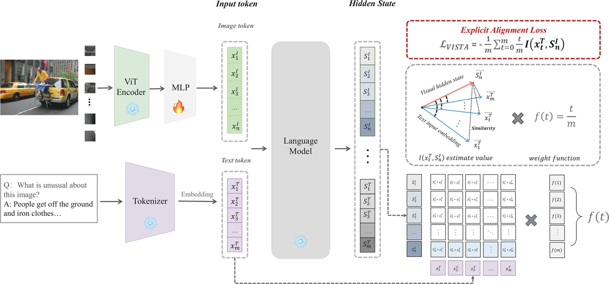
Adds an explicit mutual-information objective to strengthen vision–text alignment.
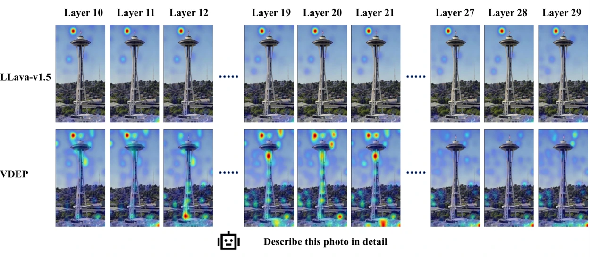
Integrates visual tokens into autoregressive pretraining using dynamic visual embeddings.
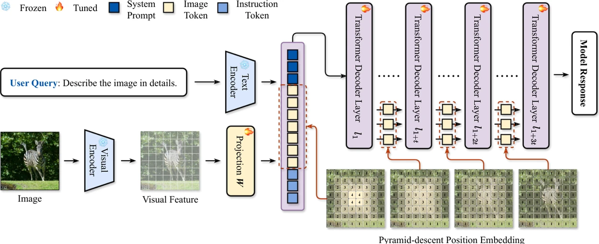
Reorders visual token positions from the image periphery toward its center at multiple scales.
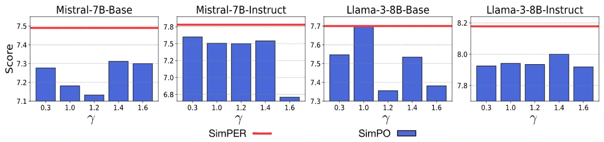
Optimizes reverse perplexity with a preference objective that has no tunable hyperparameters.
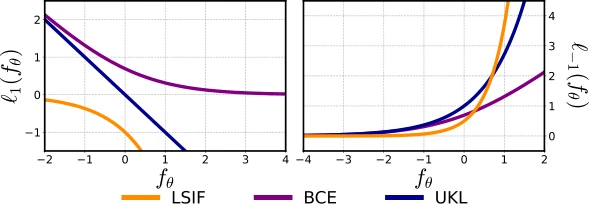
Shows how RLHF implicitly performs imitation learning on preference data.
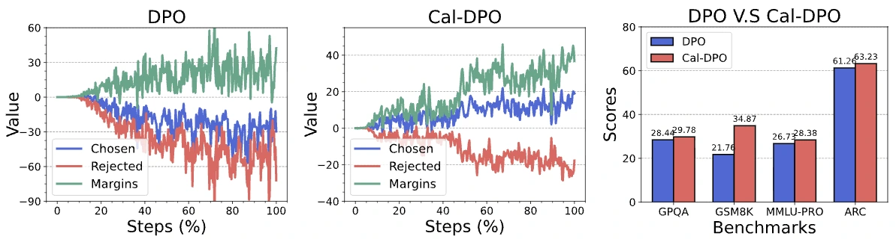
Calibrates the implicit rewards assigned to preferred and dispreferred responses.
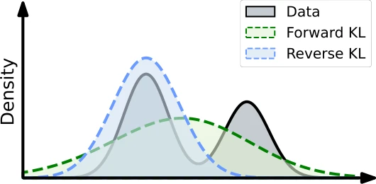
Introduces generalized self-imitation learning for alignment with offline demonstrations.
Senior Algorithm Researcher · World Model Team
Working with Wei Yin on driving world models and visual tokenization.
EponaX · Led the project under Wei Yin’s guidance, designed the end-to-end code architecture, and managed large-scale pretraining on a 1,000-GPU cluster.
EponaV2 · Built the foundational code framework.
DINO-Tok · Proposed the dual-branch tokenizer design that combines shallow texture features with deep semantic features.
WALT · Proposed aligning trajectory latents with a frozen driving world model.
Algorithm Researcher
Worked with Zhaopeng Tu. Core contributor to an FPS Game AI Bot project deployed in production.
Algorithm Researcher · Intern, then full-time
Earned a full-time research role after passing a formal defense before Dr. Zhengyou Zhang.
Worked with Nan Du and Ziyang Chen on LLM alignment, game AI commentary, and code language models. Our team received the 2022 Tencent Business Breakthrough Award.
M.S. in Computer Science · Advised by Prof. Yuyu Yin
B.S. in Computer Science